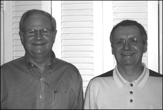
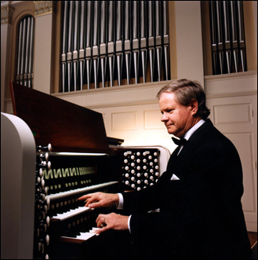

George Baker, Consultant
USA Representative for Orgues Bertrand Cattiaux
Orgues Bertrand Cattiaux of Liourdres, France, is pleased to collaborate with Dr. George Baker, who serves as the company's USA representative. Dr. Baker will help provide information and consultation services during the entire new organ project. Contact Dr. Baker at orguescattiauxusa@gmail.com. You may also wish to visit Orgues Bertrand Cattiaux.
Bertrand Cattiaux specializes in building new instruments in the true French style. New organs include one in Clicquot style in the Royal Chapel of the Château de Versailles (1995) and one in contemporary style in the Church of St-Remi de Reims (2000). He has twenty-eight years of experience restoring historical Clicquot and Cavaillé-Coll organs, such as Cathédrale St-Pierre de Poitiers (F.-H. Clicquot, 1790), Basilique St-Sernin de Toulouse (A. Cavaillé-Coll, 1888), and Cathédrale Notre-Dame de Paris (A. Cavaillé-Coll, 1868). The experience Bertrand Cattiaux has acquired during all these years gives him the ability to build new organs in different styles: French baroque, French romantic, French symphonic, as well as French contemporary style.
Consulting Portfolio
Dr. George Baker has worked with many fine organbuilders in America and in Europe. His expertise in organ resource design stems from his knowledge of the organ repertoire and of the schools of European and American organ building. Emphasis is on the French classic, romantic, and symphonic schools. He is particularly interested in ensuring that funds spend on a new or rebuilt organ are utilized in the most effective ways.
He has served as chief consultant for the restoration and enlargement of the Perkins Chapel organ at Southern Methodist University (Aeolian-Skinner/Schudi/Dupont, 2000) and for the First United Methodist Church organ in Wichita Falls, Texas (Aeolian-Skinner/Garland, 2003). More information on the SMU organ is available at J F Dupont’s website (www.jf-dupont.com, choose language then under Restorations click on Dallas (Texas USA) - 1999). More information on the Wichita Falls organ can be found at www.fumcwf.org, then click on Music, then click on Sanctuary Pipe Organ (2003).
Related Photographs
Dr. George Baker and Bertrand Cattiaux
Dr. George Baker
Perkins Chapel, Southern Methodist University
Dallas, TX
First United Methodist Church
Wichita Falls, TX